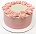

|  Home |
| Menu |
| Testimonial |
| Events |
| Catering/Delivery |
| About Us |
When I was just growing up as a little girl I knew Nana Baker. Every morning, on my way to school, I would stop by the shop and get a fresh baked muffin. She was always so happy to bake for the town so everyone loved to buy her goods. Since I lived so close, when I had children, I brought them to the shop. I am getting older and the shop's name has changed twice already and it is nice to see that the treats remain consistant. Always delicious and fresh, whenever they have extra bread at the end of the day they donate them to the local food pantry. -Susie TwoShoes |